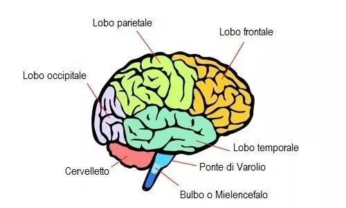

Funzioni Cognitive
Le funzioni cerebrali superiori come il ragionamento, la memoria o l’attenzione sono essenziali per una vita piena e indipendente
Comprendere il nostro cervello
Il cervello umano rappresenta l’organo più complesso del corpo, con un peso medio di circa 1,4 kg e una popolazione stimata di circa 86 miliardi di neuroni, interconnessi in reti altamente specializzate. Attraverso l’attività sincrona di queste reti, il cervello sostiene l’insieme delle funzioni che definiscono l’esperienza umana, inclusi i processi cognitivi, emotivi, motori e relazionali. Le funzioni cognitive possono essere definite come l’insieme dei processi mentali deputati alla ricezione, selezione, codifica, immagazzinamento, elaborazione e recupero delle informazioni provenienti dall’ambiente. Tali processi costituiscono la base operativa delle attività quotidiane, consentendo sia l’esecuzione di compiti semplici, sia la gestione di attività complesse che richiedono pianificazione, flessibilità e integrazione di informazioni. Nell’ambito della cognizione si distinguono diverse componenti funzionali, tra cui: l’attenzione, intesa come capacità di selezionare e mantenere il focus su stimoli rilevanti; la memoria, relativa ai processi di acquisizione, conservazione e recupero delle informazioni; il linguaggio, che consente la comunicazione e la comprensione simbolica; le funzioni esecutive, coinvolte nella pianificazione, nell’organizzazione e nel controllo del comportamento; la percezione, che permette l’interpretazione degli stimoli sensoriali; e le prassie, responsabili della programmazione e dell’esecuzione dei movimenti volontari finalizzati. Queste funzioni operano in modo integrato e dinamico, attraverso circuiti neurali distribuiti, spesso al di sotto della soglia della consapevolezza. La comprensione dei principali domini cognitivi consente non solo di apprezzare la complessità dell’organizzazione cerebrale, ma anche di riconoscere eventuali alterazioni clinicamente rilevanti, favorendo un accesso tempestivo alla valutazione specialistica e agli interventi appropriati. La conoscenza rappresenta pertanto un elemento fondamentale nella promozione della salute cognitiva e nella prevenzione.
Le Funzioni Cognitive e le aree del cervello

Le funzioni cognitive sono strettamente legate alle diverse aree del cervello, ciascuna specializzata in compiti specifici ma interconnessa con le altre. Il lobo frontale è coinvolto nelle funzioni esecutive, come pianificazione, decisione e controllo degli impulsi. Il lobo parietale contribuisce all’elaborazione delle informazioni sensoriali e all’orientamento nello spazio. Il lobo temporale è fondamentale per la memoria e il linguaggio, mentre il lobo occipitale è specializzato nella visione. Infine, strutture come il cervelletto e il sistema limbico regolano rispettivamente coordinazione motoria ed emozioni, dimostrando come il funzionamento cognitivo sia il risultato di una collaborazione complessa tra diverse aree cerebrali.
Quali sono le funzioni cognitive più importanti?
Attenzione
L’attenzione è il processo tramite il quale possiamo focalizzare le nostre risorse mentali su determinati aspetti dell’ambiente, quelli più rilevanti, o sull’esecuzione di determinate azioni che consideriamo le più idonee tra quelle possibili.
Abilità Visuo-Spaziali
Sono la capacità di rappresentare, analizzare e manipolare mentalmente gli oggetti.
Cognizione Sociale
È l’insieme dei processi cognitivi ed emotivi con cui interpretiamo, analizziamo, ricordiamo e utilizziamo le informazioni sul mondo sociale.
Funzioni Esecutive
Le funzioni esecutive sono attività mentali complesse necessarie per pianificare, organizzare, guidare, riesaminare, regolarizzare e valutare il comportamento necessario per adattarsi efficacemente all’ambiente e raggiungere gli obiettivi.
Gnosie
Le gnosie sono la capacità del cervello di riconoscere informazioni apprese in precedenza, come oggetti, persone o luoghi, attraverso i sensi.
Linguaggio
Il linguaggio è una funzione superiore che svolge i processi di simbolizzazione legati alla codifica e alla decodifica.
Memoria
La memoria è la capacità di codificare, immagazzinare e recuperare efficacemente le informazioni apprese o un evento vissuto.
Orientamento
L’orientamento è la capacità di essere consapevoli di sé stessi e del contesto in cui ci si trova in un determinato momento.
Interconnessione delle Funzioni Cognitive
Le funzioni cognitive, pur essendo studiate separatamente, nella vita quotidiana lavorano in modo integrato. La maggior parte delle attività richiede infatti la collaborazione simultanea di attenzione, memoria, linguaggio, percezione e funzioni esecutive. Ad esempio, durante una riunione utilizziamo l’attenzione per concentrarci, la memoria per ricordare informazioni, il linguaggio per comprendere e comunicare, e le funzioni esecutive per organizzare i pensieri e controllare le risposte. Questa interconnessione implica che un deficit in una funzione possa influenzarne altre: difficoltà attentive possono compromettere la memoria, mentre problemi nelle funzioni esecutive possono rendere meno efficace l’organizzazione e il recupero delle informazioni. Comprendere queste relazioni è fondamentale per una valutazione accurata e per interventi di riabilitazione efficaci.
Quando cominciano a deteriorarsi le funzioni cognitive?
Le funzioni cognitive non iniziano a deteriorarsi tutte nello stesso momento: il cambiamento è graduale e varia molto da persona a persona. In generale, si possono distinguere alcune fasi: In Giovane età adulta (20–30 anni),alcune capacità raggiungono il loro picco, soprattutto la velocità di elaborazione e la memoria di lavoro. Già dopo i 25–30 anni può iniziare un leggerissimo calo, ma è spesso impercettibile nella vita quotidiana. Durante la mezza età (40–60 anni), possono comparire piccoli cambiamenti più evidenti, come: maggiore lentezza nel recuperare informazioni,lieve riduzione della rapidità mentale Tuttavia, altre abilità come il linguaggio, l’esperienza e il ragionamento basato sulla conoscenza tendono a rimanere stabili o addirittura migliorare. Età avanzata (dai 65 anni in poi), alcune funzioni, come memoria episodica e attenzione divisa, possono diventare più fragili. Però è importante distinguere tra: invecchiamento normale che comporta un declino lieve e non invalidante condizioni patologiche, come la Malattia di Alzheimer, che comportano un declino più marcato e progressivo. Il cervello mantiene una certa plasticità per tutta la vita, quindi il declino non è inevitabile né uniforme. Molte persone mantengono buone capacità cognitive anche in età avanzata, soprattutto se adottano uno stile di vita sano.
Identificazione dei Cambiamenti Cognitivi
Attenzione
Distrazione costante nelle attività abituali, difficoltà a completare i compiti iniziati, incapacità di seguire le conversazioni.
Memoria
Dimenticare ripetutamente informazioni recenti, ripetere domande o storie, perdersi in luoghi conosciuti.
Linguaggio
Difficoltà frequente nel trovare le parole, problemi nel seguire le istruzioni, cambiamenti nella fluidità o coerenza.
Funzioni Esecutive
Disorganizzazione persistente, difficoltà a pianificare le attività, impulsività o rigidità mentale.
Percezione
Non riconoscere oggetti o persone familiari, difficoltà a giudicare le distanze, problemi di orientamento spaziale.
Prassie
Difficoltà con compiti motori conosciuti, problemi nell'usare oggetti quotidiani, confusione nel vestirsi.
Come si possono preservare le funzioni cognitive?
Preservare le funzioni cognitive significa mantenere efficienti capacità come memoria, attenzione, linguaggio e funzioni esecutive nel corso della vita. Non esiste una singola soluzione, ma una combinazione di abitudini che agiscono in sinergia. Uno dei fattori più importanti è lo stile di vita attivo. L’esercizio fisico regolare migliora la circolazione sanguigna cerebrale e favorisce la neuroplasticità, cioè la capacità del cervello di adattarsi e creare nuove connessioni. Anche attività moderate, come camminare ogni giorno, possono fare una grande differenza. Fondamentale è poi la stimolazione mentale. Imparare cose nuove, leggere, risolvere problemi o svolgere attività creative (come suonare uno strumento o imparare una lingua) aiuta a mantenere il cervello “allenato”. Questo riduce il rischio di declino cognitivo. Un altro pilastro è l’alimentazione equilibrata. Diete ricche di frutta, verdura, pesce, noci e grassi sani (come la dieta mediterranea) supportano la salute del cervello. Alcuni nutrienti, come gli omega-3 e gli antiossidanti, sono particolarmente utili p er proteggere i neuroni. Il sonno di qualità è altrettanto cruciale. Durante il sonno, il cervello consolida i ricordi e elimina sostanze di scarto. Dormire poco o male può compromettere attenzione e memoria nel lungo periodo. Non va trascurato il ruolo delle relazioni sociali. Interagire con gli altri stimola diverse aree cognitive e aiuta a prevenire isolamento e depressione, che possono influire negativamente sulle capacità mentali. Infine, è importante gestire lo stress. Livelli elevati e prolungati di stress possono danneggiare strutture cerebrali coinvolte nella memoria, come l’ippocampo. Tecniche come meditazione, respirazione o semplicemente momenti di pausa aiutano a proteggere le funzioni cognitive. In sintesi, mantenere il cervello in salute richiede un approccio globale: corpo attivo, mente stimolata e uno stile di vita equilibrato.
Attività di Stimolazione Cognitiva
Puzzle ed Enigmi
Cruciverba, sudoku e puzzle stimolano le funzioni esecutive, l'attenzione e la percezione spaziale in modo divertente e stimolante.
Lettura e Scrittura
Leggere libri, articoli o scrivere diari esercita il linguaggio, la memoria e l'attenzione sostenuta fornendo al contempo piacere intellettuale.
Musica
Suonare strumenti, cantare o persino ascoltare musica attivamente coinvolge molteplici funzioni cognitive e offre benefici emotivi.
Giochi da Tavolo
Scacchi, carte e giochi di strategia esercitano pianificazione, memoria di lavoro e flessibilità mentale in contesti sociali.
Imparare Lingue
Studiare una nuova lingua sfida memoria, linguaggio e funzioni esecutive, con benefici comprovati per la riserva cognitiva.
Interazione Sociale
Conversazioni, club e attività di gruppo mantengono linguaggio, memoria e funzioni esecutive combattendo l'isolamento.
Conclusioni
Le funzioni cognitive rappresentano il cuore delle nostre capacità mentali: ci permettono di pensare, ricordare, apprendere e prendere decisioni nella vita quotidiana. La loro importanza è fondamentale in ogni fase della vita, poiché influenzano autonomia, relazioni e qualità dell’esistenza. Per questo motivo, preservarle non è solo una questione legata all’età, ma un obiettivo continuo: attraverso uno stile di vita sano, stimoli mentali costanti e una buona gestione di stress e riposo, è possibile mantenerle attive ed efficienti più a lungo, favorendo un benessere mentale duraturo.